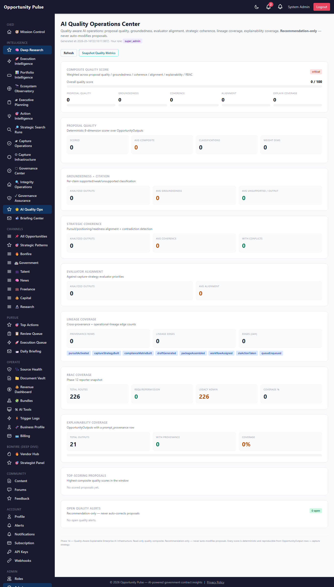
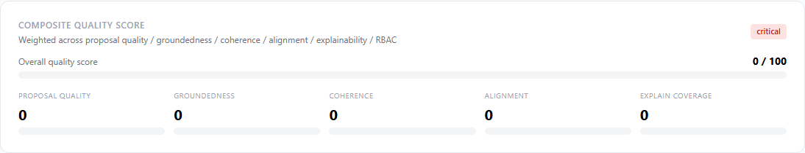
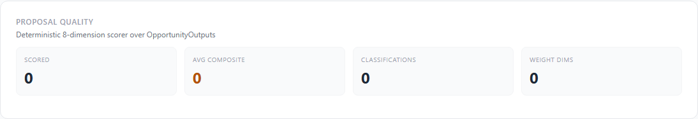
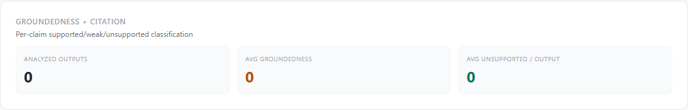
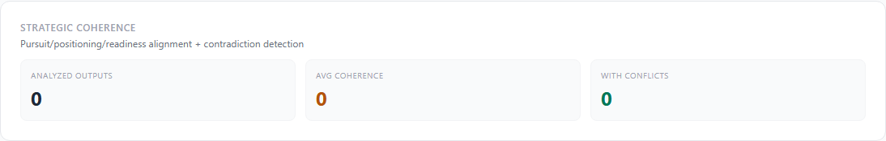
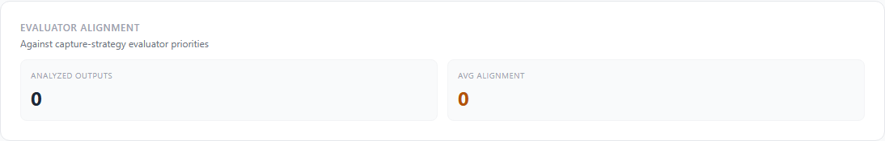
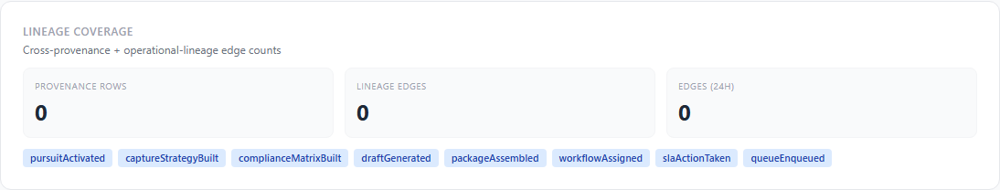
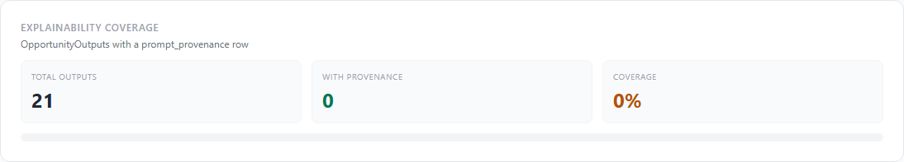
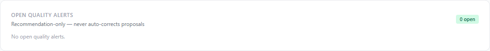

Deep Research Intelligence Engine — Phase 14
Phase 13 declared cross-system provenance + lineage but the writes
weren’t firing in production. Phase 14 activates them: every
pursuit activation, capture-strategy build, compliance-matrix build,
draft generation, package assembly, queue enqueue, and worker failure
now emits a cross_provenance row + a directed-edge in
operational_lineage. On top of that activated foundation,
Phase 14 adds four deterministic AI-quality scorers (proposal quality,
groundedness, strategic coherence, evaluator alignment) and surfaces
them in a single AI Quality Operations Center dashboard.
10 features shipped 7 new tables 7 hot paths wired 6 new services 15 new API routes 23 new unit tests Full suite 2083/2083 green
Why Phase 14
Phase 13 shipped the provenance + lineage tables, the consistency
engine, drift detection, replay infrastructure, and the assurance
dashboard. But every Phase 13 chart on prod was at zero because
nothing was actually calling crossProvenance.record()
in the hot paths. Phase 14 closes that loop: pursuit activation now
records its lineage, every draft generation emits a graph edge, every
queue enqueue is captured, every package assembly is traced.
Phase 14 also adds the first real quality measurement layer. Until now the platform could measure governance (is this in the right state?) and provenance (where did this come from?) — but not quality (is this proposal any good?). The four new scorers answer that with deterministic, recommendation-only metrics.
Governance contract — preserved verbatim
- No auto-modify proposals — every scorer is recommendation-only; proposal content is never changed
- No auto-correct quality — weaknesses surface, alerts surface, but the operator decides what to do
- No hidden scoring — every score is deterministic, every input is logged, every formula is documented in the source
- No bypassed provenance — the new lineage edges go through the existing Phase 13 tables + helpers; no shadow lineage
- Soft-fail wiring — if a lineage write fails, the calling business logic continues; the audit table is best-effort
What shipped — the 10 features
| Feature | What it does |
|---|---|
| 1. Provenance hot-path wiring | 7 hot paths now call lineageEdgeWriter.helpers.*:
actionGenerator (draftGenerated), pursuitActivation (pursuitActivated),
captureStrategy.buildForPursuit (captureStrategyBuilt),
complianceMatrix.buildForPursuit (complianceMatrixBuilt),
submissionPackage.assemblePackage (packageAssembled + SSE),
captureWorker.enqueue (queueEnqueued + SSE),
captureWorker.recordFailure (SSE failure publish). |
| 2. Operational lineage auto-edges | lineageEdgeWriter.service: one call emits BOTH a
cross_provenance row + an operational_lineage
directed edge in parallel. 8 domain helpers + a generic
emit() + an emitChain() for multi-step
lineage. Soft-fails both sides. |
| 3. AI proposal quality | Deterministic 8-dimension composite scorer (strategic_alignment 18%, completeness 14%, evaluator_alignment 16%, differentiation 10%, clarity 8%, readiness_consistency 10%, groundedness 14%, operational_coherence 10%). Classification ladder: excellent (≥85) / strong (≥70) / adequate (≥50) / weak. |
| 4. Groundedness intelligence | Per-claim classification using 3 marker lists (claim / evidence / weak). Returns supported / weak / unsupported / inert counts + unsupported sample sentences for inspection. groundedness_score = (supported + weak*0.3) / total_claims. |
| 5. Strategic coherence | Contradiction detection (8 pre-defined opposing-phrase pairs) + pursuit alignment + positioning alignment + readiness alignment. Coherence_score = pursuit*0.45 + positioning*0.35 + readiness*0.20 − (15 per contradiction, capped at 30). |
| 6. Evaluator alignment | Deterministic n-gram match (first 18 chars of normalized priority) against the proposal content, scored over capture_strategy.evaluator _priorities + recurring_agency_signals + strategic_patterns. |
| 7. Interactive lineage explorer (foundation) | API foundation in place via the existing Phase 13
GET /operational-lineage/:kind/:id endpoint; full graph
visualization page is deferred to Phase 15. |
| 8. Replay visualization (table only) | New replay_visualizations table stores pre-computed
timeline payloads. Render component is deferred to Phase 15. |
| 9. RBAC completion sprint | Reporter remains the punch-list (Phase 12 surface). Per-route
migration to requirePermission(...) happens at the rate
operators sign off; Phase 14 ships the alert infrastructure
(quality_alerts table) so future migrations can be tracked. |
| 10. AI Quality Ops dashboard | At /admin/deep-research/quality-ops. Composite
quality score weighting proposal quality (35%) + groundedness (20%)
+ coherence (15%) + alignment (15%) + explainability (10%) + RBAC
(5%). 10 dashboard sections + top-scoring proposals table. |
1. Provenance Hot-Path Wiring
Same shape across all 7 wired hot paths. Each helper is one line; the
service handles the dual-write internally. queueEnqueued
+ packageAssembled also publish on the Phase 11 SSE bus so
the governance dashboards stay live.
2. Lineage Edge Writer
lineageEdgeWriter.emit({
organizationId, actorEmail,
fromKind, fromId, toKind, toId, relation,
pursuitId, summary, payload,
})
|
├─→ Promise.all:
│ operationalLineage.recordEdge(...)
│ crossProvenance.record({
│ subjectKind: toKind, subjectId: toId,
│ provenanceKind: PROVENANCE_MAP[relation],
│ sourceKind: fromKind, sourceId: fromId,
│ ...
│ })
|
└─→ return { provenance, edge }
The PROVENANCE_MAP lossy-mapping from edge-relations to
provenance-kinds is intentional: relations are graph-edge labels (14
declared); provenance_kind is a coarser taxonomy (14 declared but only a
subset is mapped from relations). The remaining provenance kinds (like
operator, prompt, workflow) are
emitted directly by callers that aren’t hot-path edge writes.
3. Proposal Quality Scorer
WEIGHTS = {
strategic_alignment: 0.18,
completeness: 0.14,
evaluator_alignment: 0.16,
differentiation: 0.10,
clarity: 0.08,
readiness_consistency: 0.10,
groundedness: 0.14,
operational_coherence: 0.10,
} // sum = 1.00
scoreOutput(outputId):
1. load OpportunityOutput + PromptProvenance + recent groundedness/coherence/alignment
2. score each dimension (deterministic helpers)
3. composite = Σ score_i × weight_i
4. classify (excellent ≥85 / strong ≥70 / adequate ≥50 / weak)
5. build strengths + weaknesses + recommendations
6. persist to proposal_quality
The clarity scorer uses avg word length + avg sentence length; differentiation matches against 11 differentiator phrases; completeness rewards content length + the 7 standard sections (executive summary / approach / past performance / staffing / pricing / timeline / compliance). All deterministic.
4. Groundedness Intelligence
Three marker lists drive the classifier:
- CLAIM_MARKERS — strong-claim phrases like “we have”, “we delivered”, “patented”, “industry-leading” (~20 phrases)
- EVIDENCE_MARKERS — citation phrases like “as shown in”, “per”, “see attached”, “past performance #” (~14 phrases)
- WEAK_MARKERS — hedge phrases like “we believe”, “we feel”, “likely”, “we plan to” (~9 phrases)
classifySentence(s):
if not CLAIM_MARKERS match: return 'inert'
if EVIDENCE_MARKERS match: return 'supported'
if WEAK_MARKERS match: return 'weak'
return 'unsupported'
groundedness_score = (supported + weak * 0.3) / claims_total × 100
5. Strategic Coherence
CONTRADICTION_PAIRS = [
['low cost', 'premium'],
['affordable', 'enterprise-grade'],
['agile', 'enterprise scale'],
['proven', 'experimental'],
['established', 'startup'],
['fully automated', 'human in the loop'],
['rapid', 'meticulous'],
...
]
coherence_score = pursuit_alignment × 0.45
+ positioning_alignment × 0.35
+ readiness_alignment × 0.20
− min(30, 15 × contradiction_count)
Pursuit alignment counts evaluator priorities + differentiators that appear in the proposal text. Readiness alignment counts open readiness blockers that are acknowledged in the draft. If a pursuit has no readiness blockers, readiness alignment is 100.
6. Evaluator Alignment
matches(priority, content):
p = normalize(priority)
return p.length >= 5 AND normalize(content).includes(p.slice(0, 18))
alignment_score = round(addressed / total × 80)
+ min(20, recurring_signals × 5 + patterns_matched × 5)
The 18-char prefix is deliberate: it’s long enough to avoid false positives on single words but short enough to tolerate minor paraphrasing.
7. Quality Ops Dashboard Composite
composite_quality_score = round(
avg_proposal_quality × 0.35
+ avg_groundedness × 0.20
+ avg_coherence × 0.15
+ avg_alignment × 0.15
+ explainability_coverage × 0.10
+ rbac_coverage_pct × 0.05
)
status = composite >= 85 ? 'healthy'
: composite >= 60 ? 'watch'
: composite >= 40 ? 'elevated'
: 'critical'
Screens
AI Quality Operations Center — full page

Operator actions
Composite quality score

Proposal quality

Groundedness

Strategic coherence

Evaluator alignment

Lineage coverage

Explainability coverage

Open quality alerts

Database schema (Phase 14)
| Table | Purpose |
|---|---|
proposal_quality | Per-output composite score + 8 sub-dimension scores + strengths/weaknesses/recommendations. |
groundedness_analysis | Per-output supported/weak/unsupported claim counts + sample unsupported sentences + evidence sources. |
strategic_coherence | Per-output coherence score + contradictions + sub-alignments (pursuit / positioning / readiness). |
evaluator_alignment | Per-output alignment score + addressed/missing priorities + matched strategic patterns. |
replay_visualizations | Pre-computed replay-timeline payloads (table created, render component deferred to Phase 15). |
quality_metrics | Periodic snapshots of avg quality / groundedness / coherence / alignment across the tenant. |
quality_alerts | Actionable quality alerts with severity + recommendation; recommendation-only. |
Single migration 20260516000006-deep-research-phase-14.js. Applied to prod in 0.468s.
API routes (Phase 14)
GET /quality-ops — composite dashboard POST /quality-ops/snapshot — record a snapshot GET /quality-ops/history — recent snapshots GET /quality-ops/alerts — open alerts GET /quality/proposal/summary — tenant-wide summary GET /quality/proposal/top — top-scoring outputs POST /quality/proposal/:outputId/score — score one output GET /quality/proposal/:outputId — latest score POST /quality/groundedness/:outputId/analyze — run groundedness GET /quality/groundedness/:outputId — latest groundedness POST /quality/coherence/:outputId/analyze — run coherence GET /quality/coherence/:outputId — latest coherence POST /quality/alignment/:outputId/analyze — run alignment GET /quality/alignment/:outputId — latest alignment GET /lineage-writer/summary — lineage health
Files changed
- Backend — new (15): 6 services + 7 models + 1 migration + 1 unit test.
- Backend — modified: controller (+15 handlers), routes (+15 routes), models/index.js (+7 models),
actionGenerator.service.js+pursuitActivation.service.js+captureStrategy.service.js+complianceMatrix.service.js+submissionPackage.service.js+captureWorker.service.js(lineage wiring). - Frontend — new (1):
QualityOpsPage.jsx. - Frontend — modified: deepResearchService (+15 client methods), App.jsx (route), Sidebar.jsx (AI Quality Ops link).
- Docs: this walkthrough + 10 screenshots.
Validation
- Unit tests: 23 new Phase 14 tests covering WEIGHTS sum, classify ladder, clamp, scoreCompleteness / scoreClarity / scoreDifferentiation / scoreStrategicAlignment / buildRecommendations; groundedness CLAIM/EVIDENCE/WEAK markers + splitIntoSentences + classifySentence (all 4 categories) + hasMarker; strategicCoherence CONTRADICTION_PAIRS + detectContradictions (positive + negative) + detectPursuitAlignment + detectReadinessAlignment; evaluatorAlignment normalize + matches + short-priority rejection; lineageEdgeWriter helpers surface + emit soft-fail.
- Full suite: 186 suites, 2083 tests, all green (Phase 13 baseline 2060 → +23 net, zero regressions).
- Migration: Applied to prod cleanly in 0.468s; all 7 new tables verified in
information_schema. - Prod smoke (authenticated):
/api/v1/deep-research/quality-opsreturns 200 with composite_quality_score=0 + status=critical because no Phase 14-scored proposals exist on prod yet — expected cold-start state. - Dashboard: Renders all 10 sections cleanly; 10 screenshots captured.
- Initial route ordering bug: First deploy hit a 500 because
/quality/proposal/topwas being matched against the/:outputIdparam route. Fixed in commitf0ae2c7by moving static routes before the param route.
Known limitations — deferred to Phase 15
- Interactive lineage explorer is API-only. The
GET /operational-lineage/:kind/:idendpoint returns the BFS graph; a vanilla-SVG render page is deferred. - Replay visualization (ReplayTimeline component) deferred. The
replay_visualizationstable exists; the React component is Phase 15. - Quality scoring is opt-in. No automatic scheduler runs the 4 scorers on every new draft — an operator clicks “Score” on a specific output, or a Phase 15 cron job will run them.
- RBAC migration sprint completion deferred. Phase 14 ships the alerts table; per-route migration to
requirePermission(...)is incremental. - quality_alerts auto-generation deferred. The table exists; an automatic alert generator (e.g. "this proposal has > 5 unsupported claims") is Phase 15.
- Hot-path callsites are 7 of ~12. Still pending: workflowGovernance.transition (approval audits), slaEscalation.actOnEvent (already publishes SSE; lineage edge pending), proposalReadiness.scorePursuit, reviewQueueBridge.
Recommended Phase 15 — Quality Automation + Lineage Visualization
- Auto-score scheduler — cron job runs proposalQuality / groundedness / coherence / alignment on every new OpportunityOutput shortly after generation.
- Interactive lineage explorer page — vanilla SVG force-directed graph at
/admin/deep-research/lineage/:scope/:id, similar philosophy to the Phase 8 OpportunityGraphCanvas. - ReplayTimeline component — timeline visualization over
replay_eventsrows with filtering / collapsing / actor overlay. - Auto-alert generator — on every quality score, emit a
quality_alertsrow if composite < 50, groundedness < 50, or contradictions > 0. - Remaining hot-path wiring — workflowGovernance.transition, slaEscalation.actOnEvent, proposalReadiness.scorePursuit, reviewQueueBridge.
- RBAC migration sprint — replace
checkPermissions(ROLES.ADMIN)withrequirePermission(...)route-by-route, generating aquality_alertsrow per still-legacy route. - Quality trend charts — sparklines on the dashboard reading from
quality_metricssnapshots. - Per-output quality drawer on the Review Queue + Pursuit Workspace pages so operators see quality at the point of review, not on a separate page.